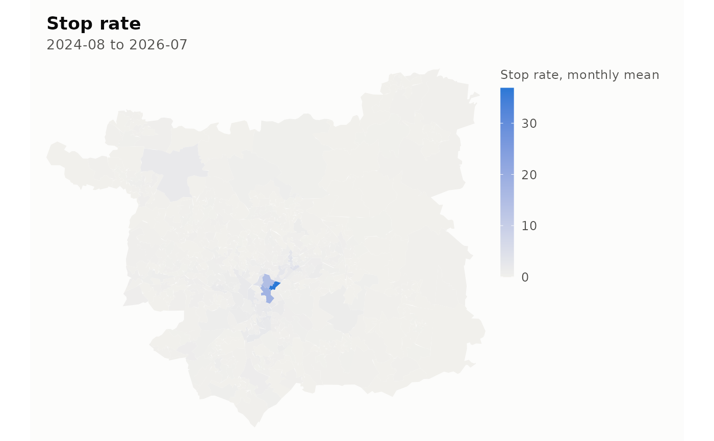

Map a panel column, an area-level estimate or a synthetic control's donors
Source:R/map.R
lamp_map.RdDraws a choropleth of the areas in a panel. The geometry comes from
lamp_boundaries() or lamp_sample_boundaries(); the fill comes from a
panel column, from the per-area slopes of a mean-group elasticity, or from
the donor weights of a synthetic control.
Usage
lamp_map(x, ...)
# S3 method for class 'lamp_panel'
lamp_map(
x,
column = "crime_total",
boundaries,
month = NULL,
statistic = c("mean", "total", "rate"),
per = 1000,
border = NA,
extent = c("panel", "all"),
...
)
# S3 method for class 'lamp_elasticity'
lamp_map(x, boundaries, border = NA, extent = c("panel", "all"), ...)
# S3 method for class 'lamp_synth'
lamp_map(x, boundaries, border = NA, extent = c("panel", "all"), ...)
# S3 method for class 'lamp_estimate'
lamp_map(x, ...)Arguments
- x
A
lamp_panel, alamp_elasticityfitted withmethod = "cce_mg", or alamp_synthfit.- ...
Passed to the method.
- column
The panel column to map.
- boundaries
An
sfobject with anareacolumn, fromlamp_boundaries()orlamp_sample_boundaries().- month
A single month to map, as a date or
"YYYY-MM".NULL, the default, aggregates every month in the panel.- statistic
How to combine months when
monthisNULL: the area's"mean"per month, its"total"over the period, or"rate", the total perperresidents per month.- per
Denominator for
statistic = "rate".- border
Colour for area borders, or
NAfor none. At lower-layer geography the borders swamp the fill, so the default is none.- extent
"panel", the default, draws only the areas the data covers."all"keeps every boundary supplied, and the caption then counts the areas outside the panel separately from those whose data is missing.
Missing is not zero
An area whose value cannot be computed, because every month of it was a
force-month with no file or because it is absent from the panel, is filled
with the missing colour from lamp_colours() and given its own legend
entry. It is never shaded as a low value. The caption counts those areas,
and counts areas present in one of the panel and the boundaries but not the
other, so that a map with a hole in it says why.
See also
Other presentation:
lamp_colours(),
lamp_table(),
lamp_theme()
Examples
panel <- lamp_sample_panel()
boundaries <- lamp_sample_boundaries()
# one local authority, so that the example draws quickly; a whole force is
# a few seconds and a national panel a few minutes
leeds <- boundaries$area[grepl("^Leeds", boundaries$name)]
lamp_map(panel[panel$area %in% leeds, ], "stop_rate", boundaries)
